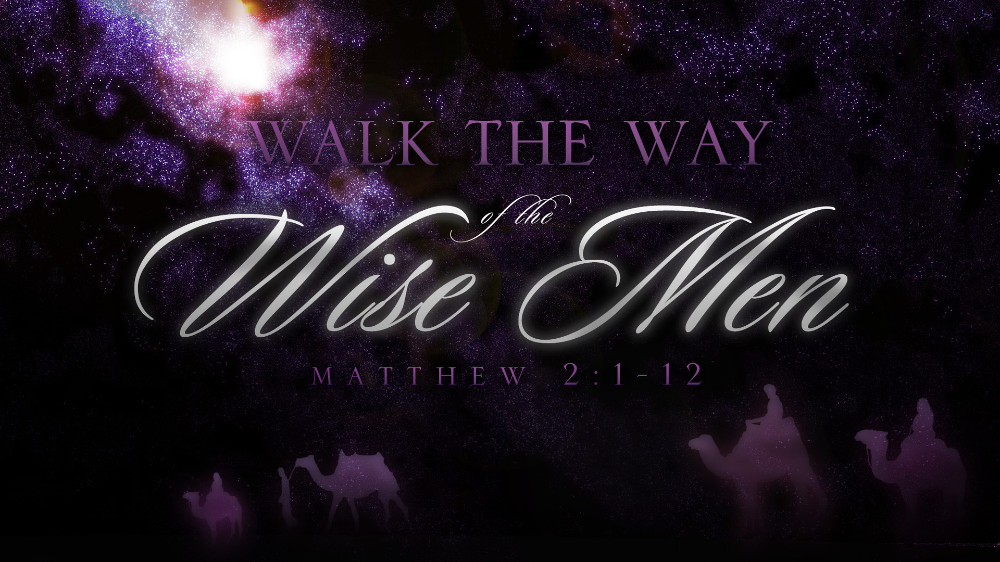

Do not store up for yourselves treasures on earth, where moth and rust destroy, and where thieves break in and steal.
But store up for yourselves treasures in heaven, where moth and rust do not destroy, and where thieves do not break in and steal. For where your treasure is, there your heart will be also.
Matthew 6:19-21 NIV
“To buy your threshing floor,” David answered, "so I can build an altar to the LORD
2 Samuel 24:21 NIV
"Let my lord the king take whatever pleases him and offer it up. Here are oxen for the burnt offering, and here are threshing sledges and ox yokes for the wood.
2 Samuel 24:22 NIV
No, I insist on paying you for it. I will not sacrifice to the LORD my God burnt offerings that cost me nothing.
2 Samuel 24:24 NIV